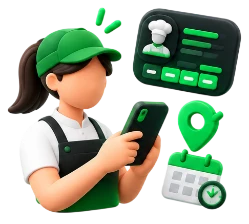
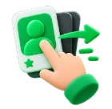
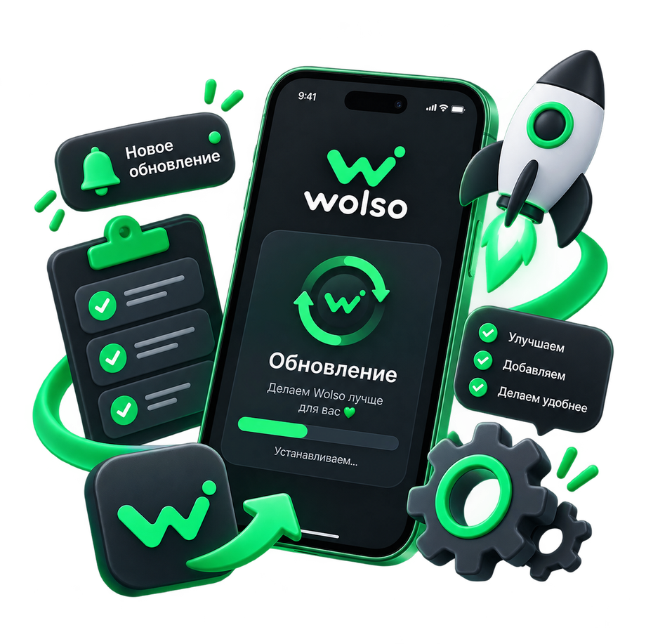

Смена на завтра —
за пару свайпов.
Wolso — подработка в кафе, барах и магазинах прямо в Telegram. Смены публикуют только проверенные заведения: с ИНН и модерацией, а не анонимное объявление из чата.
Потяни карточку в сторону
От открытого бота
до первой смены

Открой бота
Вход через свой Telegram-аккаунт — без пароля, почты и ожидания смс с кодом. Анкету заполняете один раз: имя, город, опыт и своё фото.
Смахни смену
Вправо — откликнуться, влево — пропустить. Город, оплата, часы и заведение видны прямо в карточке: открывать ничего не нужно.
Договорись в чате
Работодатель приглашает, вы подтверждаете — и открывается чат прямо в Telegram. Без звонков на незнакомые номера.
Две стороны —
один свайп
Свайпают обе стороны: соискатель листает смены, работодатель — анкеты. Решение всегда двустороннее, поэтому никто не выходит на смену, о которой не договорился.
Ищете подработку на конкретный день — сегодня, завтра или на выходных. Анкета заполняется один раз, дальше только лента.
Смотреть сменыНужен человек на смену — сегодня, на несколько дней подряд или на 13-е и 27-е. Публикация занимает пару минут, без сайтов и форм.
Разместить сменуВсё нужное для смены — без лишнего

Свайп вместо анкет
Анкета один раз — дальше просто листаете смены, как ленту.
Чат прямо в Telegram
Сообщения приходят за секунду — без сторонних мессенджеров и звонков.
Календарь смен
Все выходы в одном месте — и через Wolso, и те, что нашли сами.
Проверка работодателей
Компанию сверяем по ИНН в реестре ФНС, прежде чем пускать публиковать.
Рейтинги и отзывы
После каждой смены отзыв оставляют обе стороны — репутация видна сразу.
Уведомления в боте
Приглашение, отмена, изменение смены — бот напишет, ничего не потеряется.
Рассказываем всё как есть
Публикуем, что меняем в приложении и зачем, отвечаем на вопросы в комментариях и правда читаем ваши предложения — это рабочий журнал команды, а не пресс-релизы.
- Что нового и что чиним в приложении
- Отвечаем на вопросы прямо в комментариях
- Собираем и правда используем ваши идеи

Следующая смена уже
пролистывается мимо
Открой Wolso в Telegram — на первый отклик уйдёт меньше минуты.